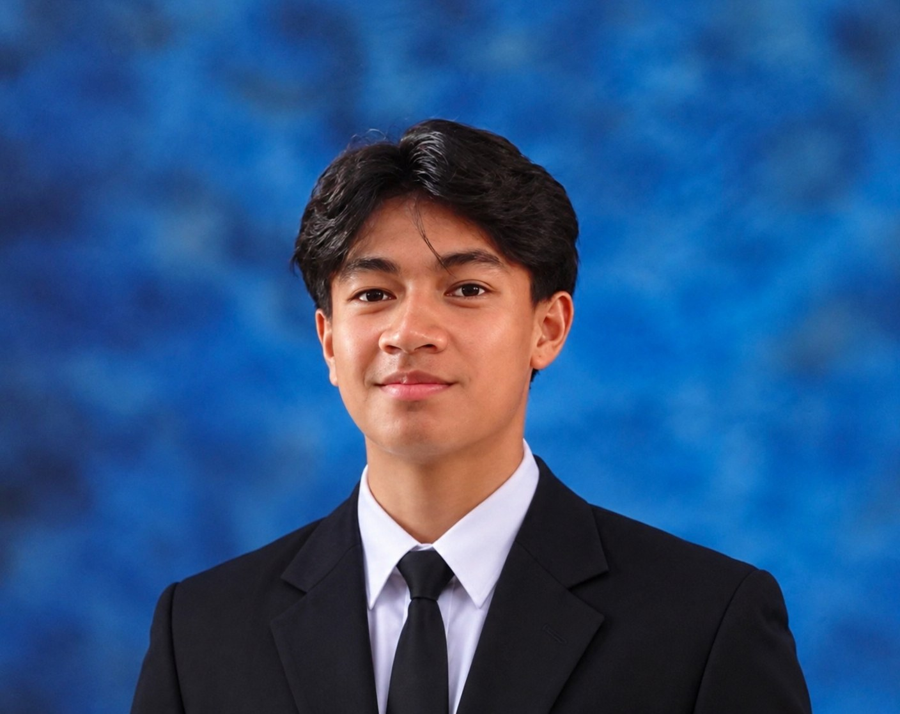
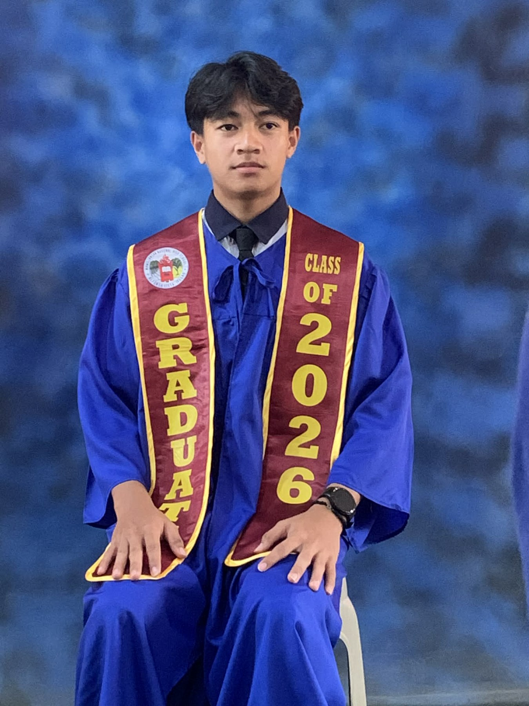
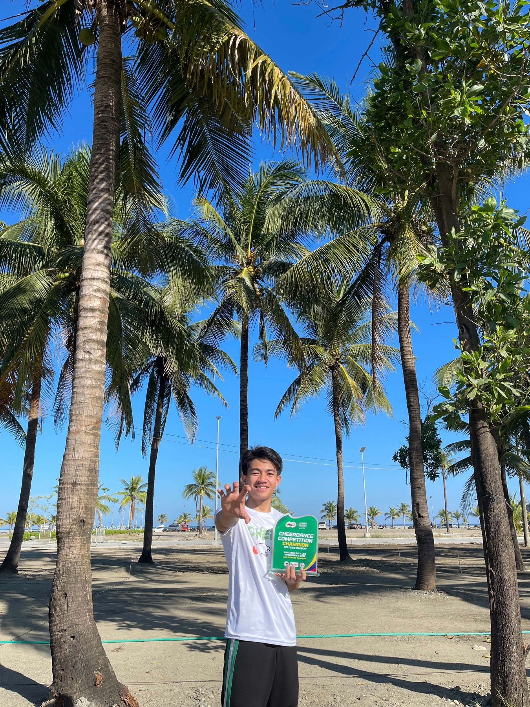
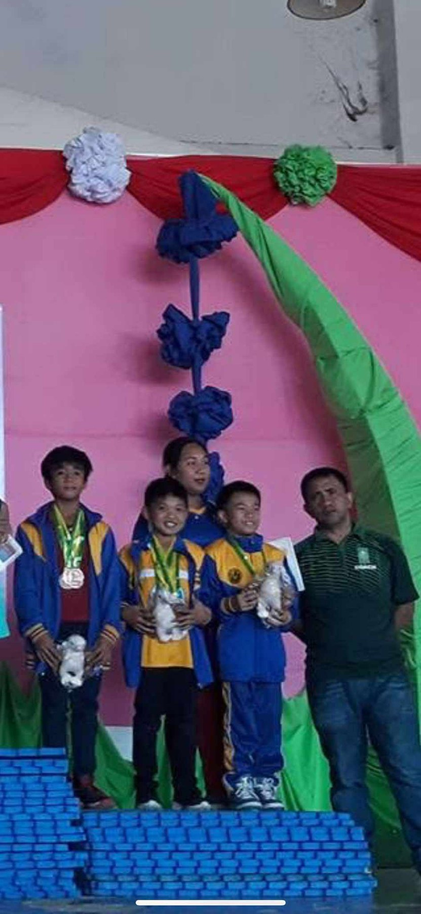
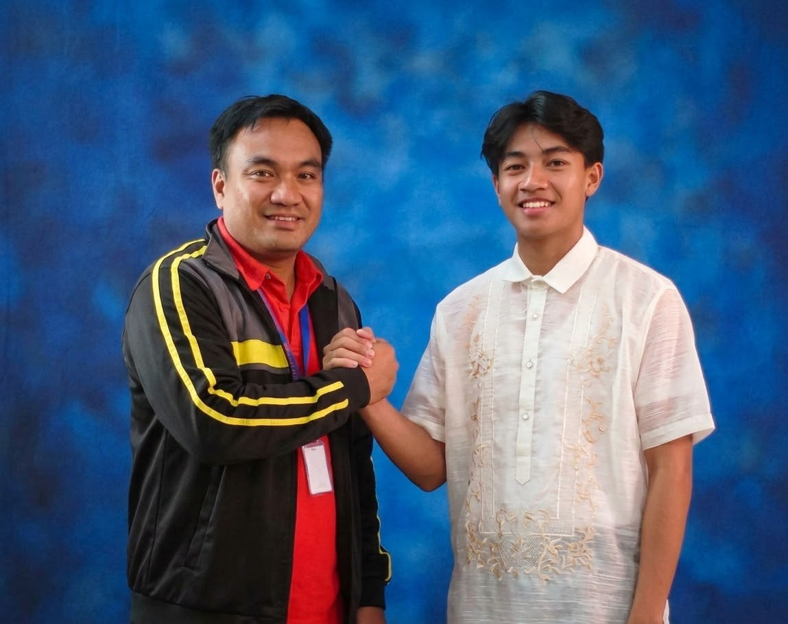
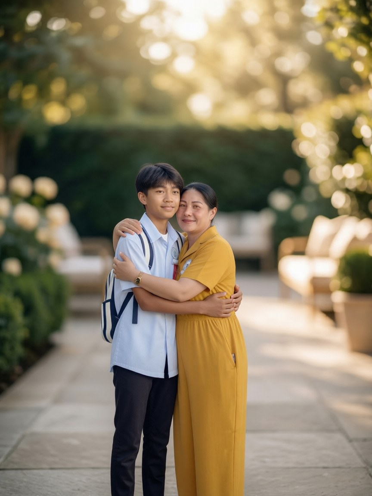
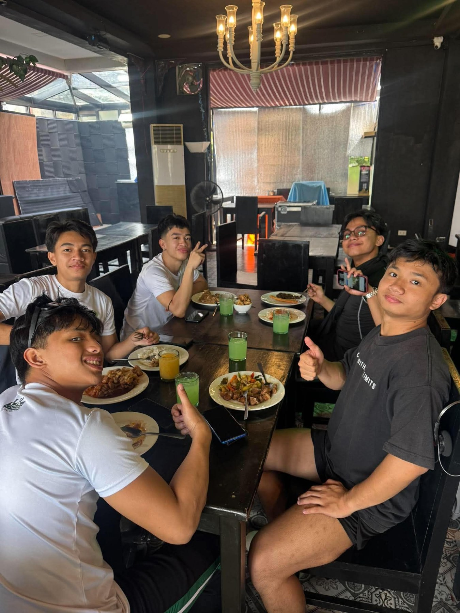

ELEMENTARY
Namillangan Elementary School
Graduated Grade 6.
PERSONAL PORTFOLIO
A quiet and hardworking person with a passion for sports, learning, and personal growth.

01 / ABOUT ME
I am a simple, quiet, and hardworking person who always strives to improve myself.
I enjoy sports, learning new things, and spending time with the people who matter to me. I believe in staying determined, facing challenges, and working hard to achieve my dreams.
— Laurence S. Segundo Jr.
PERSONAL DETAILS
02 / EDUCATION
Every school year has helped shape the person I am becoming.
ELEMENTARY
Graduated Grade 6.
JUNIOR HIGH SCHOOL
The next chapter of my academic journey.
SENIOR HIGH SCHOOL
Continuing to learn, grow, and prepare for the future.


GRADE 11
GRADE 12
03 / ACHIEVEMENTS
A collection of the experiences and accomplishments that mean a lot to me.

LATEST ACHIEVEMENT2026 · CHEERDANCE
Milo Cheerdance Competition 2026
A memorable achievement made possible through teamwork, commitment, and hard work.


GRADE 4 – GRADE 12
I have been part of gymnastics from Grade 4 through Grade 12. It has taught me discipline, patience, and perseverance.
ACADEMIC RECOGNITION
Recognized for my academic effort in both Grade 11 and Grade 12.
04 / MY PEOPLE
The people who make my journey meaningful and every experience memorable.


MY FAMILY
My father, Laurence C. Segundo, is a hardworking person, and my mother, Maricel S. Segundo, is loving and caring. I am grateful for their support and the important role they play in my life.

MY FRIENDS
My friends are part of my journey, making every experience more fun and memorable.